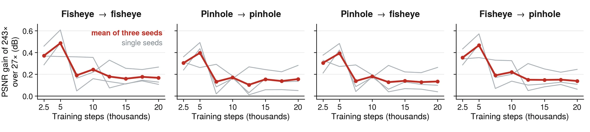
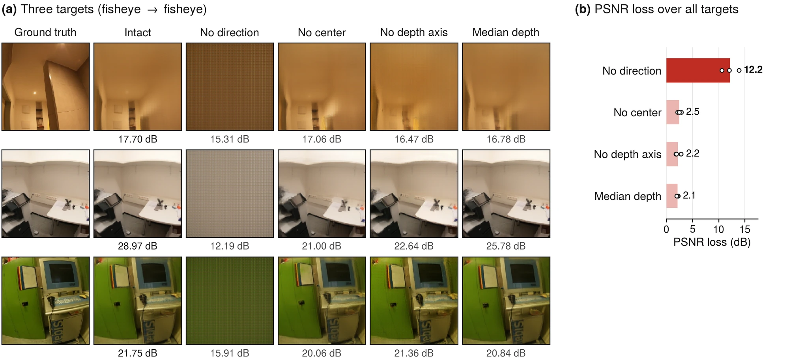

Overview video
One-minute silent overview: the task, how geometric RoPE writes camera geometry as waves from coarse to fine, what a band that is too narrow or too wide does to the rendered view, and how the head size moves the band.
Controlled frequency sweep on RealEstate10K
Select any crop or press play to inspect the same target detail across six 47M single-ray RayRoPE models trained with identical architecture and data.
Controlled band sweep on RealEstate10K (6,474 test scenes). Single-ray RayRoPE in a 47M model across frequency spans from 3× to 311. Each tile shows the crop from Fig. 1 of the paper. Shaded region marks top frequencies of 0.3 to 3 rotations per 8-pixel patch. Toggling the switch reveals the 311 model trained with only its high-frequency depth gradients blocked.
RayRoPE's gap to WorldRoPE with 48-channel heads, shrinking from its default 3× span to a 243× span.
Top-frequency window (8-pixel patches) in which RayRoPE, URoPE, and WorldRoPE all perform reliably across benchmarks.
Share of the PSNR lost at 311 recovered when blocking only the six depth gradients above 1 rotation per patch.
Along the camera path
Follow the same window frames and branches across four 47M single-ray RayRoPE models rendered from the same two input views.
Abstract
Geometric rotary position encodings (RoPE) incorporate 3D camera geometry into multi-view attention by rotating token features according to viewing rays, depths, and reprojected image coordinates. Each coordinate is rotated across a progression of frequencies—its frequency band—yet existing implementations leave this band to inherited defaults, either retaining standard 2D RoPE's top frequency or letting the frequency span grow exponentially with the attention head dimension. We show that this unstandardized setting can reverse benchmark rankings. In novel view synthesis on RealEstate10K, RayRoPE matches the strongest baseline in the 47M model (144-channel heads), yet trails by 1.2 dB in the 25M model (48-channel heads)—and exhibits the same reversal when varying head size alone at fixed model width. Populating a 243× range with four frequencies instead of the 3× default at 48 channels recovers 0.9 dB of that gap. Across view synthesis and two-view depth estimation, overly narrow bands consistently blur correspondence, whereas all three projection-based encodings perform reliably when their top frequency lies within 0.3–3 rotations per 8-pixel patch (10–90 rotations across 256×256 RealEstate10K). At the opposite extreme, overly wide bands degrade RayRoPE through a forward–backward asymmetry: averaging rotations over a predicted depth interval damps high frequencies in the forward pass, yet leaves their gradients with respect to predicted depth undamped. Blocking only those high-frequency depth gradients recovers 90–93% of the lost PSNR, showing that forward smoothing does not guarantee backward stability. Guided by this analysis, we distill practical guidelines—setting bands in image coordinates, populating spans in small heads, and avoiding unconditional same-view damping—and advocate reporting and matching frequency bands in future multi-view benchmarks.
1. Across views, positions are continuous
Within one image, tokens sit at integer patch positions. One rotation per patch gives every token the same phase, and anything above half a rotation per patch aliases to a slower wave. Standard 2D RoPE therefore stops at 0.16 rotations (1 radian) per patch.
Geometric RoPE projects each token's viewing ray into another camera. Because reprojected coordinates fall anywhere inside a patch, frequencies near one rotation per patch cleanly separate sub-patch offsets rather than aliasing.
2. Default bands depend on head dimension
A head of dimension d that rotates C coordinates gives each of them d/(2C) frequencies. RayRoPE fixes the lowest frequency and triples it at every step, so its range grows exponentially with the head size: 3× with 48-channel heads and 243× with 144 for the released three-ray code, and 311 with one ray per patch.
URoPE and WorldRoPE keep the top frequency of 2D RoPE and add lower or denser frequencies below it.
3. Benchmark rankings invert with head size
In the 25M model we change only the number of heads, setting the head dimension to 48, 96, or 192 at fixed total width. With its default rule RayRoPE trails URoPE by dB and WorldRoPE by dB at 48 channels, overtakes URoPE at 96, and approaches WorldRoPE at 192.
With its span held at 243×, RayRoPE stays within dB across all three head sizes: apparent sensitivity to head size is sensitivity to the frequency band.
4. Render explorer across frequency bands
Single-ray RayRoPE in the 47M model with 12 frequencies per coordinate across 15 scenes (paper figures, random test scenes, and 99th-percentile tail scenes). At 3×, fine detail blurs; around 243×, correspondence is crisp; at 311, texture blurs and high-frequency colored streaks emerge, and both disappear when high-frequency depth gradients are stopped.
| Top frequency | |
| Test PSNR (6,474 scenes) | |
| SSIM / LPIPS |
5. Forward damping vs. undamped depth gradients
RayRoPE averages each rotation over a predicted depth interval [μ−Δ, μ+Δ]. When many cycles fit inside the interval they cancel at O(1/ω), so a very high frequency barely changes the forward output.
Differentiating with respect to the interval center μ pulls out a factor of ω that cancels the 1/ω damping: shifting μ changes the integral at its two sharp endpoints regardless of how fast the wave oscillates inside. Smooth Gaussian windows (as in WorldRoPE) damp both forward values and depth derivatives.
6. Causal interventions on wide-band RayRoPE
We train the 311 model with its forward pass untouched and block only the depth gradient from the six frequencies above one rotation per patch. This backward-only intervention recovers % of the PSNR gap to 243× on machine A (Tab. 1; % on a second seed, keeping both stopped seeds within 0.06 dB, and 74% with 16-pixel patches; interactive renders above show the non-jumped machine-B 311 run at 25.22 dB).
Removing those six frequencies altogether recovers 92%, whereas single-precision camera geometry narrows three seeds to a 0.23 dB spread yet closes only a third of the gap (35% and 31%) unless paired with stop-gradient (+0.70 and +0.75 dB; 85–87% overall). Fixed 1-patch floors recover 72–79% without stopping gradients, while learned-width Gaussians recover 27%.
Share of the PSNR gap between 311 and 243× recovered by each intervention (47M RayRoPE; outlined dot: second seed).
7. ScanNet++ and Scenes11
Supplementary evaluations on mixed fisheye and pinhole indoor captures (ScanNet++) and posed two-view depth estimation (Scenes11). Switch tabs or click any figure to zoom at full 2000-pixel resolution.





8. Practical guidelines for geometric RoPE
1. Set the band in image units, not via head size
Specify the lowest and top frequency directly in rotations per patch or per image. On 256×256 views with 8-pixel patches, top frequencies of 0.3–3 rotations per patch (10–90 per image) performed reliably across all three encodings.
2. Keep and populate the span in small heads
When small heads leave few channels per coordinate, preserve the target span and cover it with intermediate frequencies (for example, one ray with four frequencies spanning 243× at d = 48 rather than truncating to 3×).
3. Avoid unconditional same-view damping
Within one view, image coordinates do not depend on depth. Omitting WorldRoPE's projected patch footprint under 311 recovers 0.33 dB at 25M and 0.20 dB at 47M, reaching dB over default 47M WorldRoPE (+0.17 dB on a second seed).
4. Report and match bands in benchmarks
State rotated coordinates, frequency counts, and spans alongside head dimension, and compare encodings at matched bands or across head sizes before attributing gaps to the geometric formulation.
Scenes and evaluation protocol
- Paper figures. The three scenes of Figs. 1 and 5 of the paper. They were selected; the supplement (Sec. G) gives the selection rule for Fig. 1 and the percentiles of the views of Fig. 5.
- Random test scenes. Eight test scenes drawn at random for the uncurated comparison in the supplement (Fig. S8), opening on the middle target view to match Fig. S8 and selectable across all three target views with full camera-path videos. For 25M RayRoPE at 3×, Figs. 5 and S8 show the single-ray model and this page the default three-ray model, so the PSNR values of that model differ.
- Large differences. Four scenes chosen from test scenes above the 99th percentile of the PSNR gain of 243× over 311.
- Scene percentiles. Beneath the explorer renderings, we report the scene-PSNR gain of 243× over 3× and over 311 together with its percentile across all 6,474 RealEstate10K test scenes.
- Training & evaluation. RealEstate10K models train for 80,000 steps in the released WorldRoPE codebase with identical initialization and batch order. PSNR, SSIM, and LPIPS cover the full test set (6,474 scenes, three target views each) at 256×256 from two input views.
- Multi-seed variance at 311. The 311 checkpoint shown in interactive renders reaches dB; the four initial runs of this setting span to dB (25.41 dB on a fifth run).
- Media format. Trajectory videos interpolate recorded camera poses between the two context views (outside the test metric). Stills are WebP; videos are H.264 MP4 at 2× spatial upscaling.